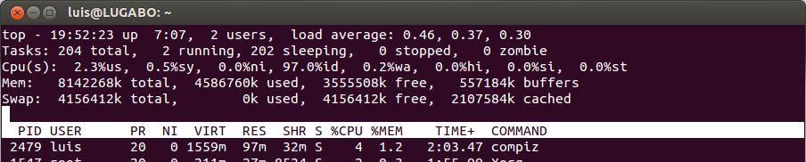
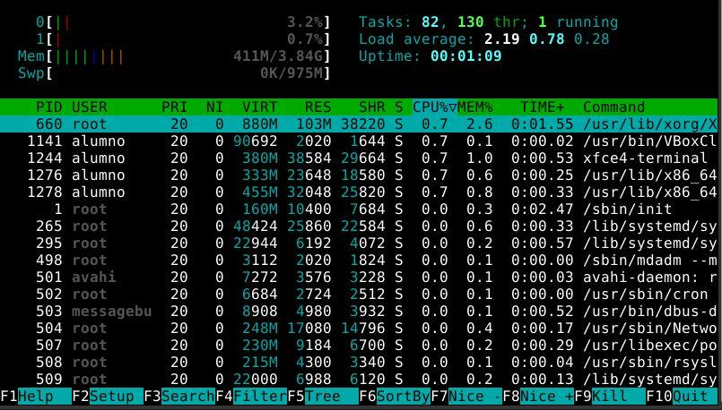

13. Administración GNU/Linux
13.1. Gestión de Procesos
En Linux se ejecutan muchos procesos de forma concurrente aunque realmente sólo uno accede al procesador en un instante determinado. Cada proceso tiene un número único que lo identifica, su PID.
A un proceso están asociadas otras informaciones como :
- El usuario que lo ejecuta
- La hora de inicio
- La línea de comandos asociada
- Su estado
- Una prioridad
- La terminal donde fue invocado
13.1.1. Comandos para inspeccionar procesos
Existen diversos comandos para inspeccionar procesos y son especialmente útiles para localizar y finalizar procesos que no son necesarios o son sospechosos.
ps
ps []opciones
Muestra los procesos actuales en el shell y sus características.
Opciones:
- -a: muestra todos los procesos de todos los usuarios en formato estandar.
- -f: muestra las relaciones jerárquicas entre los procesos.
- -x: muestra todos los procesos del usuario actual sin distinción de terminal.
- -u usuario/uid: Para seleccionar los procesos de un usuario por ID de usuario efectivo (EUID) o nombre
- -U usuario/uid: Para mostrar los procesos de un usuario por ID de usuario real (RUID) o nombre
- -e: muestra el entorno de cada proceso.
- -l: Utiliza un formato más largo (muestra más información).
pstree
pstree [opcions]
Lista todos los procesos en forma de árbol.
pidof
pidof [opciones] programa
Obtiene el PID de un programa en ejecución.
13.1.1. Comandos para monitorizar procesos
Para monitorizar continuamente los procesos, mostrando información como utilización de memoria y CPU de cada uno de ellos, se usa el comando top.
La tecla [H] proporciona ayuda sobre la utilización del programa.

Este comportamiento se puede modificar tecleando:
- M: ordenará según el empleo de la memoria.
- P: ordenará según el empleo de la CPU.
- N: ordenará por ID.
- A: ordenará por antigüedad.
La orden top también se puede utilizar con parámetros.
- -d delay : Especifica el intervalo entre actualizaciones que por defecto es 5 segundos. Esto indica el tiempo que tarda el programa en actualizar los datos que se están presentando por pantalla.
- -p PID: Para monitorizar procesos específicos se puede usar esta opción.
- -n iter: Se puede especificar que muestre cierto número de actualizaciones, y después finalice el programa.
Ejemplo:
top -p 1066
El programa top muestra además algunas estadísticas generales acerca del sistema, en las cuatro primeras líneas de la pantalla:
- La hora actual y en la que se inició el sistema.
- La cantidad de usuarios conectados.
- Los promedios de carga de la CPU en los últimos uno, cinco y quince minutos transcurridos.
- Un resumen estadístico de la cantidad de procesos en ejecución y su estado (sleeping, running, zombie y stopped).
- Un resumen del empleo de la memoria física y virtual (swap).
Una variante del programa top es htop, que a diferencia de top muestra una lista completa de procesos en ejecución en lugar de los procesos que están consumiendo recursos. Además usa colores y da un aspecto visual más amigable ofreciendo información sobre la CPU, la swap y el estado de la memoria.

13.1.2. Comandos para eliminar y detener procesos
kill
Permite enviarles señales a los procesos con significados muy diversos. Los programas o comandos deben estar preparados para atrapar y tratar estas señales, al menos las más importantes.
Sintaxis:
kill -l [señal]
kill [-s señal] pid
kill [-señal] pid
13.1.3. Tareas en Primer y Segundo Plano
Cuando se inicia un programa, éste normalmente toma el control de la terminal impidiendo realizar cualquier otra tarea.
Para liberar la terminal basta con pulsar control + Z que pausa el programa.
La alternativa a no tener que pausar es añadir un carácter ampersand [&] al final de la línea del comando a ejecutar que permitirá iniciar un programa sin que tome el control de la terminal.
13.1.4. Programación de Tareas
crontab
Con la herramienta crontab cada usuario podrá definir sus propias tareas programadas.
La sintaxis más básica es:
crontab [opciones] [usuario]
Las opciones más comunes son:
- -l: Mostrar las tareas programadas por el usuario.
- -e: Editar el fichero crontab. Con esto editaremos el fichero de configuración de crontab de cada usuario para poder modificar las tareas programadas.
- -r: Eliminar el fichero crontab corriente.
- -u usuario: Aplicar una de las opciones anteriores para un usuario determinado. Sólo root puede hacerlo.
Todas las tareas programadas están contenidas en los ficheros crontab, lo cuales podemos editar para cada usuario con la opción anterior o para todo el sistema editando el fichero /etc/crontab.
Este fichero tiene una estructura específica que deberemos seguir.
- Minuto (0-59)
- Hora (0-23)
- Día del mes (1-31)
- Mes del año (1-12)
- Día de la semana (0-7, 0 y 7 son domingo)
- Comando/Script/Tarea a ejecutar
Los campos están separados por espacios o tabuladores
A la hora de expresar los minutos, horas, días, meses y año, podemos utilizar:
- Valores enteros
- Listas: 3,23,43
- Rangos de tiempo: 15; pasos: 26/2 (= 2,4,6)
-
- (cualquier valor o todos los días, meses, etc).
Una vez programada nuestras tareas debemos reiniciar cron para aplicar los cambios:
sudo /etc/init.d/cron restart
sudo service cron restart
Ejemplos:
0 * * * * /usr/sbin/ntpdate hora.oxixares.com > /dev/null
Cada hora en punto ejecutamos la sincronización horaria y mandamos la salida a /dev/null/
0 20 * * * echo "Me ejecuto a las ocho en punto" > /dev/null
Simplemente escribimos la frase a las 20:00 todos los días
at
Otro comando para la programación de tareas es at
Con este otro comando ejecutamos tareas a una hora concreta sólo una vez
at [opciones]hora [fecha]
Las opciones más comunes son:
- -l: Mostrar las tareas programadas por el usuario.
- -d tarea: Elimina la tarea. El número de la tarea lo podemos consultar con la opción anteriores
Ejemplo:
$ at 3:15pm ó $ at 15:15
Una vez ejecutemos esta orden nos aparece el prompt de at para que introduzcamos los comandos que deben ejecutarse a esa hora:
at> gmessage “Terminó tu turno” (terminaremos con control+d)
13.2. Gestión de Dispositivos
En Linux los dispositivos físicos de la máquina y los de almacenamiento de información, en particular, son manipulados a través de ficheros especiales ubicados en el directorio /dev
Esta acción se conoce como "montar'', que en definitiva es asociar el dispositivo a un directorio determinado. Las particiones de los discos en Linux se montan en directorios como /, /home y /usr.
El sistema tiene un fichero llamado /etc/fstab en el cual se especifican dónde y en qué forma se montan los diferentes dispositivos.
En el fichero /etc/fstab se guarda la lista de dispositivos montados en el arranque del sistema.
Cada línea en este fichero describe un dispositivo, indicando los siguientes aspectos para cada uno:
- Nombre del dispositivo o etiqueta.
- Ejemplos: /dev/hda1, /dev/sdc1, /dev/fd0, LABEL=/home, LABEL=/cursos. También puede aparecer codificada como UUID.
- Directorio donde se monta.
- Ejemplos: /, /mnt/floppy, /tmp, etc.
- Sistema de ficheros.
- Ejemplos: ext2, msdos, nfs, swap, iso9660, auto, etc.
- Opciones de montaje.
- Ejemplos: ro, rw, exec, auto, user, etc.
- Dos valores numéricos:
- El primero toma los valores 0/1 indicando si al dispositivo se le hará dump (especie de backup) o no.
- El segundo número expresa la prioridad que tiene el dispositivo cuando se chequea la integridad del File System durante el inicio del sistema.
Las opciones de montaje son numerosas. Las más usadas son:
- auto: indica que el dispositivo se monta siempre que se inicie el sistema. La opuesta es noauto.
- rw: indica que el dispositivo se monta con permisos de lectura y escritura. -ro: indica que el dispositivo se monta con permisos de lectura solamente.
- defaults: es una opción equivalente a la unión de rw, suid, dev, exec, auto, nouser y async.
Actualmente para cada dispositivo con sistema de ficheros ext[1234] en lugar de especificar su nombre en el fichero /etc/fstab se puede indicar una etiqueta o identificador asociado.
La forma utilizada es LABEL=[etiqueta] o UUID=[uuid].
Ejemplo /etc/fstab
# <file system> <mount point> <type> <options> <dump> <pass>
/dev/sda1 / ext4 errors=remount-ro 0 1
/dev/sda2 none swap sw 0 0
/dev/sr0 /media/cdrom0 udf,iso9660 user,noauto 0 0
13.2.1. Montaje
Si queremos que un dispositivo se monte automáticamente cada vez que el sistema se inicie, basta con colocar una línea apropiada en el fichero /etc/fstab.
Si lo que queremos es montar o desmontar dispositivos directamente desde línea de comandos, podemos emplear mount y umount respectivamente.
Sintaxis:
mount [opciones] [dispositivo] [dir]
umount [opciones] <> dir| <dispositivo>
Algunas opciones:
- -a: en el caso de mount monta todos los dispositivos que tienen la opción auto en el fichero fstab, y para umount desmonta todo lo que está en el fichero /etc/mtab.
- -t [tipo]: indica el tipo de file system a montar.
- -o [opciones]: especifica las opciones de montaje (separadas por comas).
Ejemplo:
mount -t iso9660 -o ro /dev/cdrom /mnt
13.2.2. Manejo de Discos
df
Para conocer información acerca de las particiones y dispositivos montados actualmente en el sistema.
Sintaxis:
df [opciones] [directorio]
Algunas opciones:
- -h: (human readable view) por defecto los tamaños se muestran en bytes y con esta opción se hace de forma más legible (Ej. G para gigabytes y M para megabytes).
- -T: muestra además el tipo de file system de cada dispositivo.
du
El comando du nos informa del espacio que ocupa los ficheros o directorios.
Sintaxis:
du [opciones] [directorio]
Algunas opciones: - -h: Formato humano - -s: Resumen de total
Para particionar un disco nuevo en GNU/Linux tenemos los comandos fdisk y gdisk
Sintaxis:
fdisk [device]
Opciones:
- p: Muestra la tabla de particiones de la unidad
- l: Muestra los tipos de particiones posibles en Linux (columna Id)
- u: Cambia el tipo de unidad que se utilizará en el resto de opciones.
- d: Borrar una partición.
- n: Crea una nueva partición (p, e, l).
- a: Cambia la partición de inicio del sistema o partición activa.
- v: Verifica la tabla de particiones.
- w: Guarda todos los cambios.
- q: Salir del comando fdisk.MANEJO DE DISCOS
Para particionar un disco nuevo en GNU/Linux tenemos los comandos fdisk y gdisk
Sintaxis:
gdisk [device]
Opciones:
- c: Asigna una etiqueta a alguna de las particiones del disco duro seleccionado.
- d: Borra una partición.
- i: Muestra información sobre la partición del disco duro seleccionada.
- l: Muestra información sobre los tipos de particiones reconocidos por el comando gdisk.
- o: Crea una nueva tabla de particiones GPT vacía.
- n: Crea una nueva partición (volumen).
- p: Muestra la tabla de particiones de la unidad.
- q: Sale de la ejecución del comando gdisk.
- t: Modifica el tipo de partición seleccionada.
- v: Verifica el estado de un disco, mostrando los posibles errores detectados.
- w: Guarda todos los cambios realizados.
- x: Accede a un nuevo menú.
Para crear un sistema de ficheros en un dispositivo (formatear a alto nivel).
Sintaxis:
mkfs [-t type] [device]
Ejemplo:
mkfs -t ext4 /dev/sdd1
Resumiendo Los pasos para añadir un disco nuevo en GNU/Linux
- Añadir disco a la máquina
- Crear la/s particiones en el disco (fdisk o gdisk)
- Formatear la partición (mkfs)
- Montar la partición (mount)
- SI queremos que el montaje sea permanente, añadir una entrada al /etc/fstab
13.3. Hardware
Comandos que facilitan información del hardware
lshw
Sintaxis:
lshw [opiones] [parametros]
Algunas opciones:
- -html: Genera un informe en formato html (página web)
dmidecode
Sintaxis:
dmidecode [opiones] [parametros]
Lista información de la BIOS
13.4. Instalación de Software
Existen varias opciones para instalar Software en Linux:
- Paquetes.
- Contienen código máquina y no código fuente, por lo que cada arquitectura necesita el suyo (X86, ALPHA, SPARC), dependiendo de la distribución se usan:
- Paquetes rpm
- Paquetes deb
- Ficheros ejecutables:
- Tan sólo tenemos que ejecutarlo desde una terminal con el comando “./fichero.bin”
- Código fuente.
- Contienen el código fuente del programa y es necesario compilarlos e instalar el programa manualmente. Suelen incluir un fichero de texto README o INSTALL con instrucciones para la instalación.
13.5 Repositorios (OPCIONAL)
Un repositorio es un servidor que almacena paquetes y programas para que nosotros los podamos descargar e instalar en nuestra distribución GNU-Linux.
Cada una de las distribuciones GNU-Linux dispone de sus propios repositorios en los que se hallan los programas que nosotros podemos instalar en nuestro equipo.
También podemos añadir y usar repositorios de terceros que contendrán versiones más actuales del software que tenemos instalado o programas que no han incluido los creadores de la distro que usamos.
- Al ejecutar el gestor de paquetes nos conectaremos al repositorio de internet que contiene los paquetes que queremos descargar.
- Una vez realizada la comprobación se descargarán los paquetes y dependencias necesarias para instalar el programa.
- Una vez descargados los paquetes se procederá a la instalación de los mismos.
Los repositorios de Ubuntu se dividen en cinco categorías:
- main
- universe
- multiverse
- restricted
- partner.
También puedes añadir repositorios de terceros para acceder a más software o a versiones más nuevas de un software.
También puedes instalar una aplicación adicional utilizando los famosos PPA (Personal Package Archive).
Ejemplos para añadir repositorios con apt-add-repository:
- apt-add-repository 'deb http://myserver/path/to/repo stable myrepo'
- apt-add-repository 'http://myserver/path/to/repo myrepo'
- apt-add-repository 'https://packages.medibuntu.org free non-free'
- apt-add-repository http://extras.ubuntu.com/ubuntu
- apt-add-repository ppa:user/repository
- apt-add-repository ppa:user/distro/repository
- apt-add-repository multiverse
13.6. Gestión de Paquetes con APT
El comando apt se utilza para instalar y desinstalar aplicaciones
apt install xxxx: Sirve para instalar un paquete un paquete.
apt remove xxxx: Sirve para eliminar un paquete.
Mas info
El comando apt posee las siguientes características:
- Facilita la actualización del sistema de una forma sencilla.
- Realiza la gestión inteligente de las dependencias de la paquetería (instalación de un paquete y sus dependencias, eliminación, etc...)
- Puede realizar consultas a diferentes repositorios, siendo muy sencillo buscar una aplicación o servicio.
- Ofrece servicios de eliminación de paquetes obsoletos o no usados.
Los ficheros de configuración se encuentran principalmente en el directorio /etc/apt .
- /etc/apt/apt.conf.d/: Fichero de configuración global
- /etc/apt/sources.list: Fichero de repositorios
- /var/cache/apt/: Directorio de caché
Actualización:
- apt update: Refresca los repositorios de software.
- apt upgrade: Actualiza el sistema completamente.
- apt dist-upgrade: Actualiza la distribución completa (Deben ejecutarse previamente los dos comandos anteriores.
- apt list –upgradable: Lista los paquetes que pueden actualizarse en el sistema.
Instalación:
- apt install xxxx: Sirve para instalar un paquete un paquete.
- apt -f install xxxx: Automáticamente instala paquetes y dependencias cuando hay un error en la instalación.
- apt –fix-broken: Trata de arreglar paquetes rotos.
- apt hold xxxx: Es para mantener un paquete en la versión actual y no actualizarlo.
Borrado:
- apt remove xxxx: Sirve para eliminar un paquete.
- apt purge xxxx: Borra un paquete y los “restos” que de él depende.
- apt autoremove: Elimina los paquetes que se instalaron automáticamente para satisfacer las dependencias de otros paquetes y que ya no se necesitan.
- apt –purge autoremove: Aparte de eliminar los paquetes innecesarios, limpia las dependencias que tampoco son necesarias.
- apt clean xxxx: Borra los paquetes DEB en la caché del sistema.
Búsqueda:
- apt search xxxx: Busca los paquetes.
- apt show xxxx: Muestra información sobre el paquete dado, incluyendo sus dependencias, instalación y tamaño de la descarga, las fuentes de las que está disponible el paquete, la descripción del contenido del paquete y mucho más.
- apt list: Lista todos los paquetes sin filtro
- apt list --installed: Listar sólo los paquetes instalados.
13.7. Scripts
Para ejecutar múltiples comandos en un solo paso desde el shell, puede escribirlos en una línea y separarlos con punto y coma.
pwd ; whoami ¡¡En realidad, esto es un script de Bash!!
El comando pwd se ejecuta primero, mostrando el directorio de trabajo actual, luego se ejecuta el comando whoami para mostrar el usuario conectado
¿Qué sucede si pones los comandos en un archivo, y cuando necesitamos ejecutar estos comandos, solo ejecutamos ese archivo?
Esto es conocido como un script de Bash.
Al comienzo de cualquier script de Bash, debemos definir qué shell usaremos porque hay muchos shells en Linux, Bash shell es uno de ellos.
La primera línea que escribes al escribir un script bash es el (#!) Seguido del shell que utilizaras.
#!/bin/bash
Si utilizas el signo de numeral (#) delante de cualquier línea en su script de Bash, esta línea se comentará, lo que significa que no se procesará, pero la línea anterior es un caso especial. Esta línea define qué shell utilizaremos, que es el Bash de shell en nuestro caso.
Los comandos de shell se ingresan uno por línea como este:
#!/bin/bash
# This is a comment
pwd
whoami
Puedes escribir múltiples comandos en la misma línea, pero debes separarlos con punto y coma, aunque es preferible escribir comandos en líneas separadas, esto hará que sea más fácil de leer luego.
Después de escribir tu script de Bash, guarda el archivo.
Ahora, configura ese archivo para que sea ejecutable, de lo contrario, mostrara permisos denegados. Puedes revisar cómo configurar permisos utilizando el comando chmod.
chmod +x ./myscript
Luego intenta ejecutarlo simplemente escribiéndolo en el shell:
./myscript
Y sí, se ejecuta.
Ejemplo de Script
#!/bin/bash
# our comment is here
echo "The current directory is:"
pwd
echo "The user logged in is:"
whoami
13.7.1. Comandos para los scripts
echo
Muestra por pantalla el texto entrecomillado
#!/bin/bash
# our comment is here
echo "Esto aparece por pantalla”
find
Para buscar ficheros
Sintaxis:
find [directorio_de_inicio] [opciones] [terminos_de_busqueda]
Opciones más comunes:
- -name X: Busca el nombre del fichero.
- -type f: Busca solo archivos de tipo f.
- -type d: Busca solo directorios
Ejemplos:
- find / -name reporte (Busca el fichero cuyo nombre es reporte)
- find . -name “*.txt” (Cuando se utilizan comodines en los ficheros a buscar)
- find . -type f -name “*.txt” (Busca solo ficheros)
- find . -type d -name “conf” (Busca solo directorios)
Mas infor
grep
Sirve para encontrar texto dentro del archivo que le indiquemos.
Sintaxis:
grep [opciones] [terminos_de_busqueda] [fichero_de_busqueda]
Opciones más comunes:
- -i: no diferenciará entre mayúsculas y minúsculas.
- -w: fuerza que sólo encuentre palabras concretas.
- -v: selecciona las líneas que no coinciden.
- -n: muestra el número de la línea con las palabras de solicitadas.
- -r: busca directorios recursivamente.
- -l: muestra sólo nombres de archivos con las líneas seleccionadas.
Ejemplo:
grep Imágenes /home/pablinux/Documentos/830.desktop
13.8. Redirecciones
Permiten enviar la salida de un comando a un fichero:
> fich1.txt- Envía la salida al fichero fich1.txt, si este fichero existe lo sobreescribe
>> fich1.txt- Envía la salida al fichero fich1.txt, si este fichero existe añade al final
2> fich1.txt- Envía la salida con los errores al fichero fich1.txt, si este fichero existe lo sobreescribe
2>> fich1.txt- Envía la salida con los errores al fichero fich1.txt, si este fichero existe añade al final